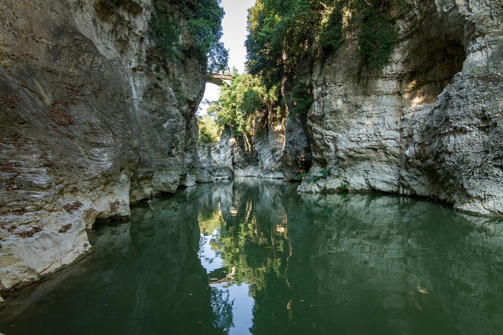
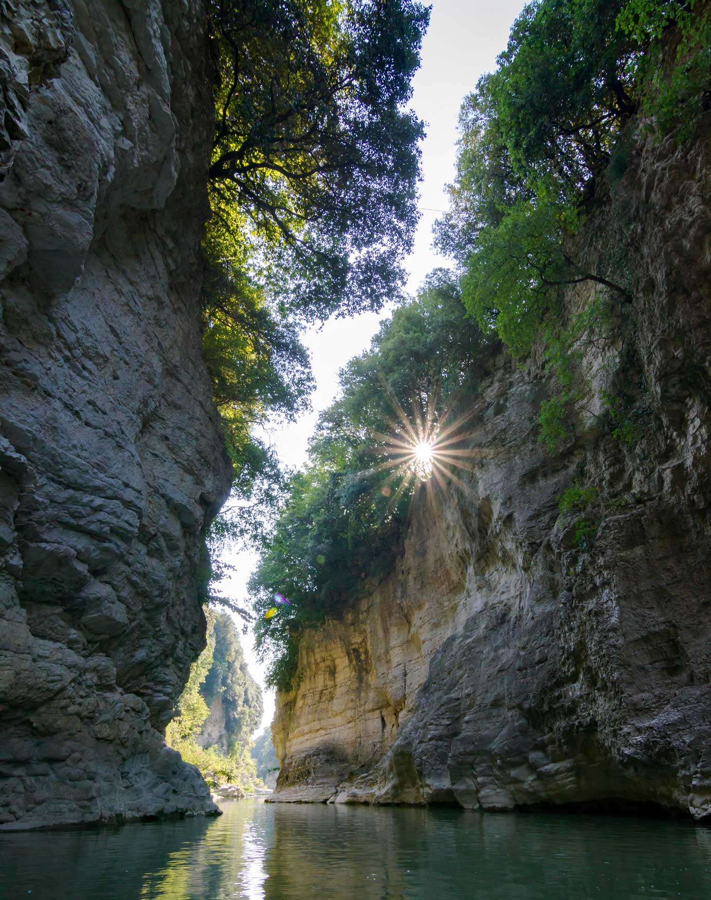

Il calcare che conserva le forme
Nel settore di San Lazzaro il Metauro attraversa calcari della Formazione della Maiolica. Sono rocce dure, compatte, spesso con selce, adatte a conservare nel tempo incisioni e superfici levigate.
San Lazzaro · Fossombrone · Marche
A San Lazzaro di Fossombrone, nelle Marche, il Metauro entra in una gola stretta, leviga il calcare e lascia nella roccia cavità profonde, tondeggianti, riconoscibili al primo sguardo.
Foto: Davide Tonelli
Le Marmitte dei Giganti si trovano a San Lazzaro, frazione di Fossombrone, lungo un tratto in cui il Metauro abbandona per poco il profilo aperto della valle e scorre fra pareti ravvicinate.
La forra è breve ma intensa: rocce chiare, acqua verde, vegetazione di sponda e cavità levigate si alternano in uno spazio raccolto, visibile dall’alto nella zona del Ponte dei Saltelli e, dove consentito, anche dai percorsi che scendono verso il fiume.


Roccia, acqua, tempo
Qui il paesaggio non si rivela tutto insieme. Prima si percepisce il rumore dell’acqua, poi il taglio verticale della gola, infine le superfici arrotondate che danno il nome al luogo. Le marmitte non sono semplici buche nella roccia: sono la traccia visibile di una corrente che ha lavorato sempre negli stessi punti.
Nei periodi di maggiore energia il fiume trasporta ghiaia e ciottoli. Quando questi materiali restano intrappolati in piccoli vortici, ruotano sul fondo e sulle pareti come abrasivi naturali. Così una concavità appena accennata può allargarsi, approfondirsi e diventare una cavità stabile.
Geologia
Le Marmitte dei Giganti nascono dall’incontro fra una roccia resistente e una corrente capace di concentrarsi in spazi stretti. Il risultato è una successione di forme scavate, lucidate e arrotondate dal movimento dell’acqua e dei sedimenti.
Nel settore di San Lazzaro il Metauro attraversa calcari della Formazione della Maiolica. Sono rocce dure, compatte, spesso con selce, adatte a conservare nel tempo incisioni e superfici levigate.
Quando la portata cresce, l’acqua accelera e genera moti circolari. I ciottoli trascinati dalla corrente restano talvolta in rotazione e consumano il calcare per abrasione.
Le ricostruzioni geologiche indicano la presenza di un antico solco fluviale oggi nascosto dai depositi alluvionali. È una traccia del modo in cui il Metauro ha cambiato assetto nel tempo.
Alcune concavità poste più in alto sulle pareti non sono più raggiunte dalla corrente ordinaria. Raccontano fasi precedenti dell’incisione e aiutano a leggere l’evoluzione della gola.
Come visitarlo
Il Ponte dei Saltelli scavalca la Forra di San Lazzaro e permette di leggere dall’alto il disegno del canyon. Il nome è legato ai piccoli salti d’acqua presenti lungo questo tratto del Metauro.
La bellezza del luogo non deve far dimenticare che si tratta di un ambiente fluviale. Il livello dell’acqua può cambiare e le rocce bagnate diventano scivolose.
Il sito è a breve distanza dal centro di Fossombrone e dalla vecchia direttrice della Flaminia. È una tappa naturale nel territorio di Pesaro e Urbino, collegata alla valle del Metauro, ai rilievi verso la Cesana e agli itinerari verso la Gola del Furlo.
Immagini
Fotografie della forra, del Ponte dei Saltelli e del paesaggio fluviale del Metauro: dettagli di roccia, acqua e pareti che aiutano a leggere il carattere del luogo.
Dove siamo
Il segnaposto indica l’area della forra a San Lazzaro. Aprendo la mappa puoi raggiungere il punto con il navigatore e orientarti rispetto al Ponte dei Saltelli e alla viabilità vicina.
Apri il segnaposto in Google MapsTerritorio
Le Marmitte dei Giganti appartengono a un contesto più ampio: la valle del Metauro, il paesaggio di San Lazzaro, la vicinanza alla direttrice storica della Flaminia e il rapporto costante fra Fossombrone e il suo fiume. Sono una meta adatta a chi cerca natura nelle Marche, attività all’aperto, escursioni brevi in provincia di Pesaro e Urbino e luoghi da abbinare alla Gola del Furlo, ai borghi del Metauro e al centro storico di Fossombrone.
Domande frequenti
Le Marmitte dei Giganti si trovano a San Lazzaro, frazione di Fossombrone, in provincia di Pesaro e Urbino. La forra è lungo il fiume Metauro, nelle Marche.
Il riferimento più semplice è l’area del Ponte dei Saltelli, vicino a San Lazzaro di Fossombrone. La mappa del sito indica il punto GPS per aprire il navigatore.
Sì. Il Ponte dei Saltelli, conosciuto anche come Ponte di Diocleziano, è l’affaccio principale sulla Forra di San Lazzaro e sulle pareti calcaree scavate dal Metauro.
Sì. Le Marmitte dei Giganti sono a Fossombrone, nella valle del Metauro, e possono essere abbinate a un itinerario naturalistico verso la Gola del Furlo e gli altri luoghi dell’entroterra marchigiano.
È una visita breve e panoramica, adatta a chi cerca natura, fotografia, geologia e attività all’aperto nelle Marche. Se si scende verso il fiume servono scarpe adatte e attenzione alle condizioni dell’acqua e delle rocce.
Social
Racconta le Marmitte con i tuoi occhi
Seguici su Instagram e condividi le tue fotografie taggando @marmittedeigiganti oppure usando #marmittedeigiganti: potresti vedere il tuo post ricondiviso sui profili ufficiali.